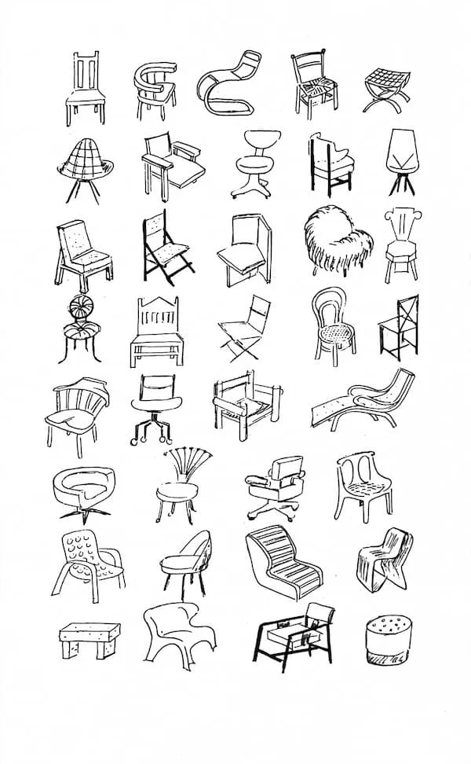
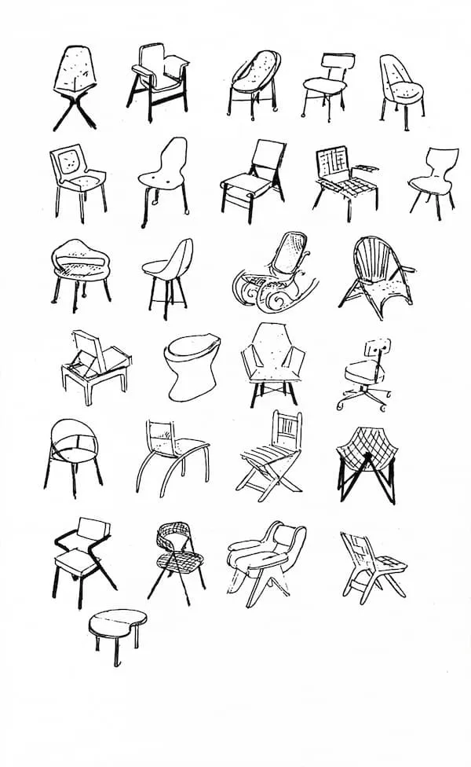
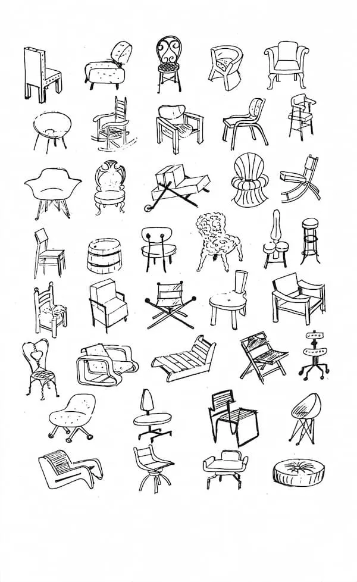
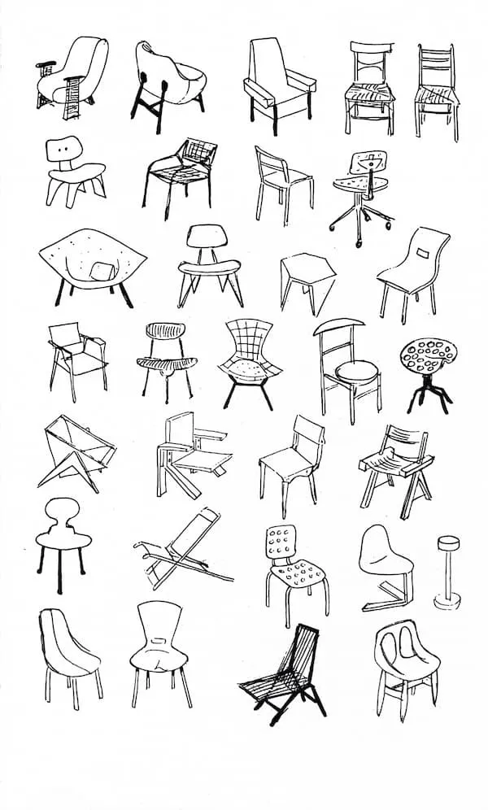
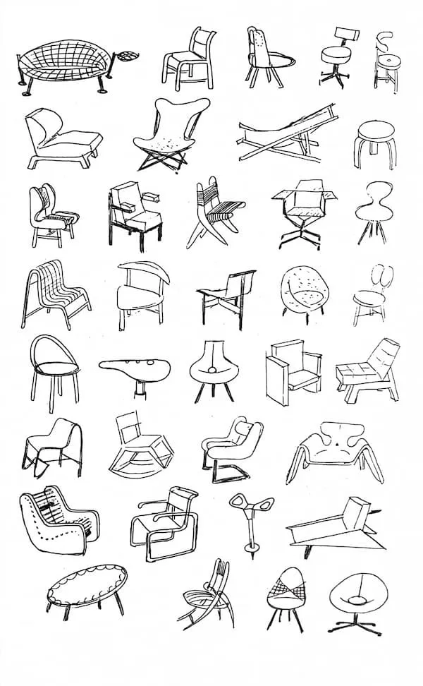
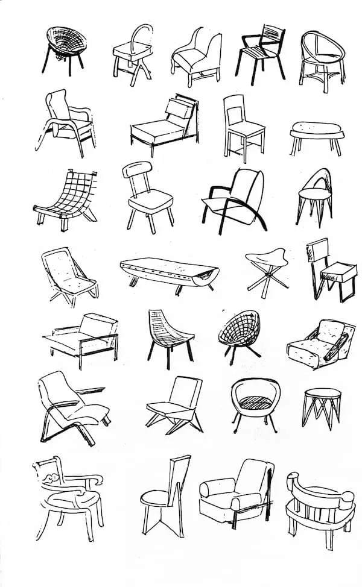

Pensiero divergente
Dedica: per te che come me, sei un po' pigro e reticente a cercare una seconda soluzione.
Quando guardo questi disegni di Munari resto sempre sorpreso dall'enorme numero di soluzioni per il problema «sedia».
Quando studio una soluzione per un qualsiasi progetto UI, nel 99% dei casi è buona la prima. Una seconda soluzione? Di solito no. Mi viene in mente quello che diceva Paul Rand: «Quasi sempre la mia prima idea è la migliore». Anche per me è così.
Ma la prima non è la prima. Ne ho considerate altre mentre analizzo il problema. Il punto è questo: non credo sia importante formalizzare le soluzioni scartate, se però delle alternative sono state considerate.
Regola pratica: devi considerare più soluzioni.






Bruno Munari, variazioni sul tema della sedia. Sei pagine, decine di soluzioni per lo stesso problema.
Scritto il 3 dicembre 2024 su birbi.biz, che chiude: il pezzo è stato spostato qui così com'era, con le immagini portate in questo repo perché non dipendessero da un sito che sta per sparire. Hai domande o commenti? Scrivimi a luca@mucca.design.